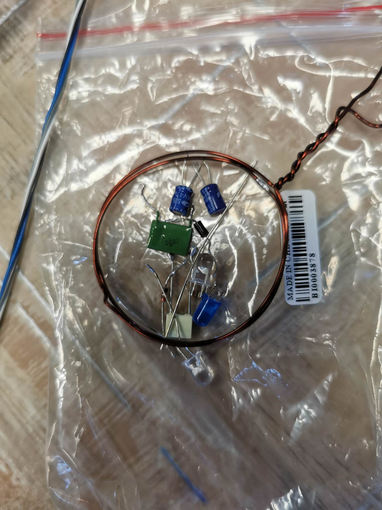
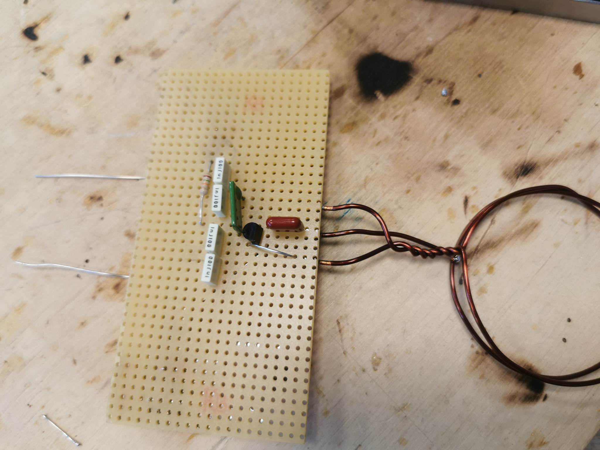
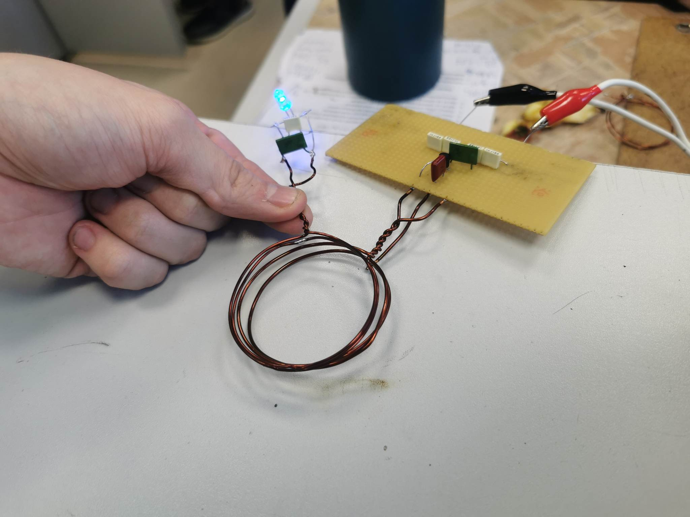

Adóegység tervezése, építése:

Az adó egység működése:
A tranzisztorok, kondenzátorok és ellenállások egy adó áramkört alkottak, amely egy jelgenerátor működését látta el. Ez az áramkör folyamatosan generált egy elektromágneses jelet, amely a vezeték nélküli átvitelhez szükséges. A réztekercs egy olyan antennaként funkcionált, amely az áramkörben lévő jelgenerátor jeleit elektromágneses térbe sugározta.

Hosszú folyamat volt de sikerült megépíteni működőképesre így mehetett a Nyák-ra.

A vevőegység működése:
A vevőegység tartalmazott egy másik tekercset (vevőtekercs), amely képes volt az elektromágneses jelet érzékelni. Amikor a vevőtekercs a környezetben lévő elektromágneses jelet érzékelte (amit az adó sugárzott), a vevőegység elektromos jelet generált, amely vezérelte a LED-et.

